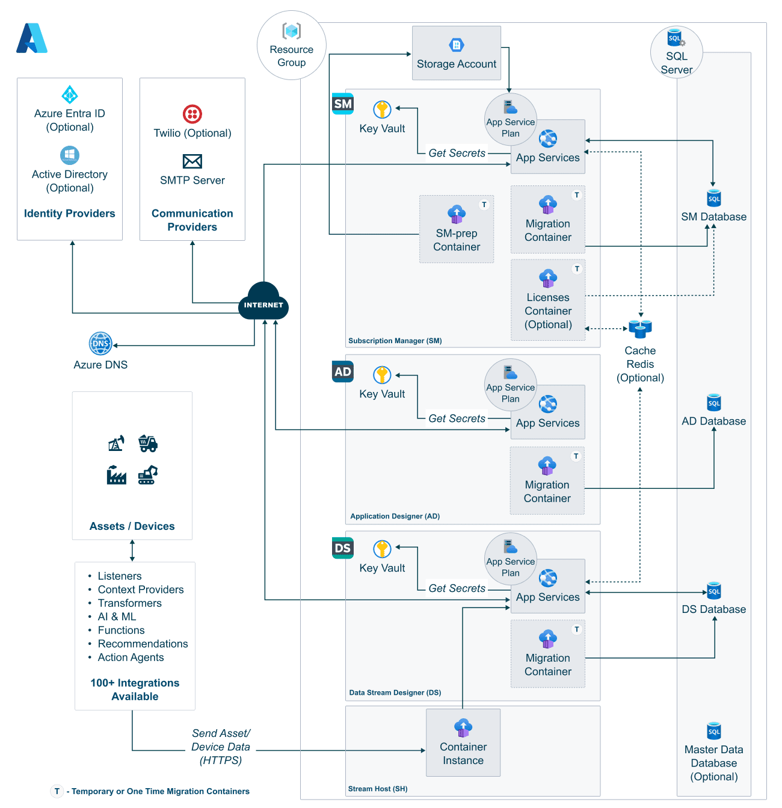

Deploy XMPro on Azure
Introduction
Get your XMPro intelligent digital twin platform running on Microsoft Azure quickly and reliably with Terraform automation. This streamlined deployment process handles all the complex infrastructure setup automatically, letting you focus on building applications rather than managing servers. In about 20 minutes, you'll have a fully functional XMPro environment ready for evaluation or production use.
Note
This guide works on Windows, Mac, and Linux. Windows users should use Command Prompt or PowerShell.
Prerequisites
You need:
- An Azure account with a subscription
- A computer with internet access
Quick Deployment
1. Install Required Tools
Install these on your computer:
- Git: Download here
- Terraform: Download here
- Azure CLI: Download here
Verify they work:
Windows (Command Prompt or PowerShell):
git --version
terraform version
az version
Mac/Linux:
git --version
terraform version
az version
2. Login to Azure
All platforms:
# Login to your Azure account
az login
# Set your subscription (if you have multiple)
az account set --subscription "YOUR-SUBSCRIPTION-NAME-OR-ID"
Tip
Terraform will automatically use your Azure CLI credentials. If you prefer using environment variables or service principals, see the advanced setup below.
Optional: Use ARM environment variables instead
If you can't use az login (e.g., in CI/CD pipelines), set these environment variables:
Windows (PowerShell):
$env:ARM_SUBSCRIPTION_ID = "your-subscription-id"
$env:ARM_TENANT_ID = "your-tenant-id"
$env:ARM_CLIENT_ID = "your-service-principal-id"
$env:ARM_CLIENT_SECRET = "your-service-principal-password"
Mac/Linux:
export ARM_SUBSCRIPTION_ID="your-subscription-id"
export ARM_TENANT_ID="your-tenant-id"
export ARM_CLIENT_ID="your-service-principal-id"
export ARM_CLIENT_SECRET="your-service-principal-password"
For more details, see Microsoft's Terraform on Azure documentation.
3. Get the Deployment Files
Windows (PowerShell):
# Download the deployment configuration
git clone https://github.com/XMPro/terraform-xmpro-azure.git
cd terraform-xmpro-azure\examples\basic
# Create your configuration
Copy-Item terraform.tfvars.example terraform.tfvars
Windows (Command Prompt):
# Download the deployment configuration
git clone https://github.com/XMPro/terraform-xmpro-azure.git
cd terraform-xmpro-azure\examples\basic
# Create your configuration
copy terraform.tfvars.example terraform.tfvars
Mac/Linux:
# Download the deployment configuration
git clone https://github.com/XMPro/terraform-xmpro-azure.git
cd terraform-xmpro-azure/examples/basic
# Create your configuration
cp terraform.tfvars.example terraform.tfvars
Edit terraform.tfvars with any text editor (Notepad, VS Code, vim, etc.).
Only modify the QUICK START section at the top:
# Core platform settings
location = "eastus" # Azure region (see list below)
company_name = "YourCompany" # Your company name (must be unique)
# Database credentials - IMPORTANT: Don't change these after deployment!
db_admin_username = "xmadmin" # Database admin username
db_admin_password = "StrongPassword123!" # Database admin password
# Application passwords
site_admin_password = "StrongPassword123!" # Super admin password
company_admin_password = "StrongPassword123!" # Company admin password
# Company administrator details
company_admin_email_address = "admin@yourcompany.com" # Your email address
company_admin_first_name = "John" # Your first name
company_admin_last_name = "Doe" # Your last name
# Evaluation mode - Set to true for testing/demo (includes licenses)
is_evaluation_mode = true
Tip
Common Azure regions: eastus, westus2, centralus, westeurope, northeurope, southeastasia, australiaeast
For the complete list, run az account list-locations -o table or see Azure Regions
4. Deploy XMPro
All platforms:
terraform init # Prepare Terraform
terraform apply # Deploy to Azure (type 'yes' when asked)
5. Access XMPro
After deployment completes:
All platforms:
terraform output # Shows your URLs
Login to Subscription Manager with either account:
| Account Type | Username | Password | Purpose |
|---|---|---|---|
| Super Admin | admin@xmpro.onxmpro.com |
Your site_admin_password |
Full system access, license management |
| Company Admin | firstname.lastname@yourcompany.onxmpro.com |
Your company_admin_password |
Company management, normal operations |
Note
Replace firstname.lastname and yourcompany with the values you set in terraform.tfvars.
That's It!
XMPro is now running on Azure with this architecture:

Your deployment includes:
- ✅ All XMPro applications (SM, AD, DS, Stream Host)
- ✅ SQL databases for each component
- ✅ Key Vault for secret management
- ✅ Application Insights monitoring
- ✅ Storage accounts for files
- ✅ SSL certificates automatically configured
What's Next?
For guides in setting up your first tenant, uploading agents and connectors, or deploying additional stream hosts, refer to the Post Deployment Guide
Need Help?
Common Issues
"terraform: command not found" → You haven't installed Terraform yet. Go back to step 1.
"Please ensure you have logged in"
→ Run az login again
"Resource already exists"
→ Add prefix = "unique123" to your terraform.tfvars
Takes longer than 20 minutes? → First deployment can take up to 30 minutes. Check Azure Portal to see progress.
More Resources
- Troubleshooting Guide - Fix common problems
- Advanced Configuration - Production settings
- Complete Documentation - All options
Next Steps
After completing your infrastructure deployment, proceed to:
Post-deployment - Complete the setup and configuration of your XMPro environment.
Cleanup
To remove everything and stop Azure charges:
All platforms:
terraform destroy
Note
This guide uses the examples/basic configuration which is perfect for getting started. For production deployments with custom domains, SMTP, and other advanced features, see the GitHub documentation.
Last modified: November 12, 2025